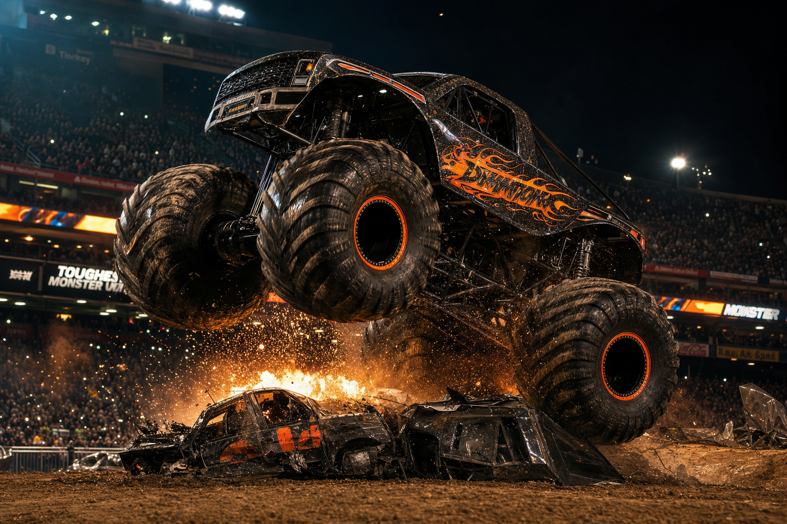
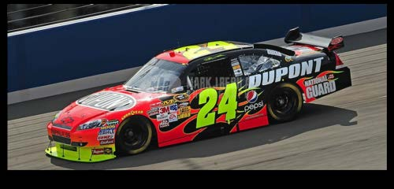
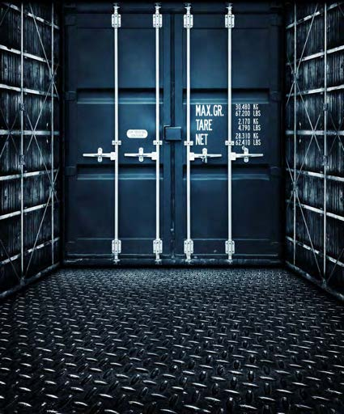

Precision polymer forming powered by Theis Tekton™.
Theis Molding delivers custom polymer molding, composite forming, and Tekton-enhanced compound manufacturing for defense, industrial, medical, and consumer applications. Our molding capabilities leverage the unique properties of Theis Tekton chemistry to produce parts and components that standard polymers simply cannot replicate — including variable-hardness components, self-healing parts, and ballistic-rated composites.
We serve OEMs, defense primes, industrial manufacturers, and specialty product companies requiring precision-engineered polymer components at any volume. From prototype to production, Theis Molding brings the full power of Tekton materials science to every component we form — delivering performance advantages that define the next generation of engineered polymer products.
Theis Tekton is not merely a coating — it is a fully formable engineering material that can be cast, sprayed, rolled, or brushed into virtually any geometry. This versatility makes Tekton the foundation of Theis Molding's capability to produce custom shapes, body panels, shields, housings, and structural enclosures that outperform every conventional material alternative.
Tekton's most remarkable property as a molding material is its shape memory: components return to their original geometry after impact events that would permanently deform or shatter conventional polymer or metal parts. This was dramatically demonstrated when a Monster Truck body — manufactured and warranted by Theis for 3 years against scratches, dings, and dents — absorbed a complete end-over-end rollover and returned to its original shape when the truck was uprighted. Those same bodies remain intact more than 30 years later, with some still used in active shows.
Tekton molded components are lighter and stronger than traditional materials across the full range of durometer settings — from flexible, rubber-like configurations through intermediate engineering polymer ranges to hard, rigid, high-impact-resistant formulations. This variable-hardness capability within a single chemistry system is unique in the industry.
Returns to original geometry after major impact events — demonstrated in Monster Truck rollovers and ballistic impact testing
Monster Truck bodies fabricated by Theis with a 3-year warranty are still intact and in use over 30 years later
Single chemistry system formulated from gum-flexible to steel-rigid — designed for exact application requirements
Mass and weight advantages over metal, fiberglass, and conventional engineering polymers at equivalent or superior strength
Bonds to and forms on metal, wood, plastic, concrete, fiberglass, and most industrial substrates without primer
Full color and surface finish customization — components can be painted, clear-coated, or left natural finish
Custom molded parts incorporating Tekton polymer chemistry — delivering superior impact resistance, chemical compatibility, and service life compared to standard commodity polymer components across industrial and specialty applications.
Components engineered using Tekton's unique variable-hardness capability — transitioning from gum-like flexibility to steel-like rigidity on demand, enabling adaptive performance impossible with conventional single-durometer polymers.
Molded composite panels incorporating Tekton reinforcement for ballistic protection, blast attenuation, and structural applications — produced to NIJ and DoD specification requirements for defense and law enforcement customers.
Molded elements and sealing components incorporating Tekton's self-healing polymer chemistry — autonomously restoring barrier integrity and mechanical performance after impact, abrasion, or puncture without operator intervention.
High-performance molded parts for industrial equipment, process machinery, and specialty applications requiring chemical resistance, dimensional stability, and service life beyond what standard engineering thermoplastics can provide.
ITAR-aware defense component production for DoD programs and prime contractor supply chains — polymer parts, composite subassemblies, and Tekton-enhanced components meeting military specification and quality requirements.
Theis Molding has delivered to some of the world's most demanding — and unusual — clients. From Hollywood to NASCAR, from the Pentagon to the San Francisco Zoo, Tekton-molded components have proven their capabilities where it counts most.
The mold for the Batman suit worn in The Dark Knight Rises was produced at the Theis Industries laboratory in Redondo Beach, California and delivered to the Howard Hughes film set in Playa del Rey, CA. The suit's actual material capabilities — the genuine defensive properties of Tekton-molded armor — far exceeded what was portrayed on screen during the film's premiere. The material's true performance characteristics are well above what the entertainment presentation suggested.

Theis Industries created the molds for multiple monster truck bodies, fabricated the finished bodies, and backed them with a 3-year warranty against scratches, dings, and dents. Thirty years later, all bodies remain intact — and some are still used in active shows. After a complete end-over-end rollover, the body returned to its original shape when the truck was righted.
"...the truck rolled end over end... I was sore, the frame was crushed, and when they turned my truck over, the body popped back into its original shape... If this was our old body we would have been picking it up with a leaf rake!"
— Nick Owens, Iron Outlaw
"I always say the only thing that wins out here is dirt. I stand corrected. Theis beat the dirt."
— Dennis Anderson, Grave Digger

Theis manufactured 470 yellow, high-impact resistant deflection shields (front fascia) for the NASCAR safety program. Required on every car in the race. Material was tested in a centrifuge spinning at approximately 40,000 RPM — a 6-inch iron peg was placed in the path of the spinning material. Theis Tekton deformed but remained intact, performing exactly as intended. Shields withstand crash impact forces approaching 440 mph.
The San Francisco Zoo commissioned Theis Industries to design and fabricate an indestructible enrichment toy for the zoo's Black Rhino population — an endangered species requiring robust, challenging, and safe stimulation that conventional materials could not survive. Theis brought survival training and deep knowledge of animal behavior to the design process — engineering for the specific sensory triggers of the Black Rhino: smell, texture, and challenging weight distribution. The final coating incorporated rat feces as an extract to optimize rhino engagement with the object. The Tekton construction made it genuinely indestructible under rhino use conditions.

Waste Management engaged Theis Industries to coat 5,000 commercial dumpster bodies with Theis Tekton to address leaking and unsightly mess from decomposing waste. Tekton fully sealed each dumpster, including complete resistance to the highly corrosive nature of decomposing milk and organic waste — among the most chemically aggressive commercial waste streams. The coating held up without concern, protecting the steel bodies and dramatically extending expected service life.
An Australian bar owner approached Theis Industries with an unusual requirement: virtually indestructible beer mugs that maintained the experience of drinking from glass — optically clear, with proper foam retention — while surviving the kind of abuse that shatters conventional glassware. Theis produced custom optically clear Tekton mugs that maintained beer foam in ways plastic alternatives could not replicate, and proved effectively indestructible under normal — and abnormal — bar use. The bar's patrons could throw glasses to their hearts' content.
Theis Molding supports the full product development and production lifecycle — from concept mold creation through volume fabrication, across any substrate and any application method the project requires.
Full custom mold engineering and fabrication from client specifications or reverse-engineering from existing components. Prototype and production molds available for any geometry.
High-build spray application of Tekton for conformal coatings, complex geometries, in-situ application on existing assets, and rapid large-area coverage.
Precision roll and brush application for controlled film build, detail work, repair application, and situations where spray application is not appropriate.
Cast molding of Tekton into custom forms for solid components, panels, shields, and structural elements requiring precise geometry and consistent cross-section.
Tekton bonds to and forms on metal, wood, plastic, concrete, fiberglass, foam, and most industrial substrates — no primer required in most applications.
Rapid cure formulations return coated and molded components to service in hours — not days — minimizing downtime for repair, refurbishment, and emergency coating applications.
Full palette of custom color formulations and surface finish options — matte, satin, gloss, textured, or optically clear — for any aesthetic or functional requirement.
Single-piece prototypes through volume production runs — Theis Molding scales with client requirements from engineering samples to fleet-scale component supply.
All Theis Molding production is manufactured in the United States — supporting domestic supply chain requirements, ITAR compliance, and Buy American procurement programs.
Every Theis Molding component is manufactured in the United States. Domestic production. American materials science. Uncompromising quality.
Every Theis Molding product is engineered with or enhanced by Theis Tekton™ — our proprietary materials system proven for over 20 years in the world's most extreme environments. This gives Theis Molding a materials advantage that no competitor can replicate. The unique variable-hardness and self-healing properties of Tekton chemistry open entirely new performance envelopes in polymer component design that no conventional molding operation can match.
Learn About Theis Tekton →Defense system OEMs and Tier 1 primes requiring polymer and composite components with ballistic, blast, and environmental performance specifications exceeding conventional molded part capabilities.
Process equipment manufacturers, heavy industrial OEMs, and specialty machinery builders requiring high-performance polymer components with superior wear, chemical, and temperature resistance for demanding operating environments.
Medical device manufacturers seeking biocompatible, precision-molded polymer components with the dimensional stability and material properties required for implantable and patient-contact medical applications.
Aerospace tier suppliers requiring lightweight, high-performance polymer composites for structural, sealing, and protective applications where weight, temperature, and long-term material stability are critical design constraints.
Consumer product innovators requiring polymer components with unique properties — variable hardness, self-healing surfaces, or advanced impact resistance — that differentiate their products in competitive markets.
Federal and state government procurement offices sourcing polymer parts and composite components for infrastructure, law enforcement equipment, protective gear, and specialized government applications.
Contact Theis Industries to discuss products, pricing, licensing, or partnership for the Theis Molding division.